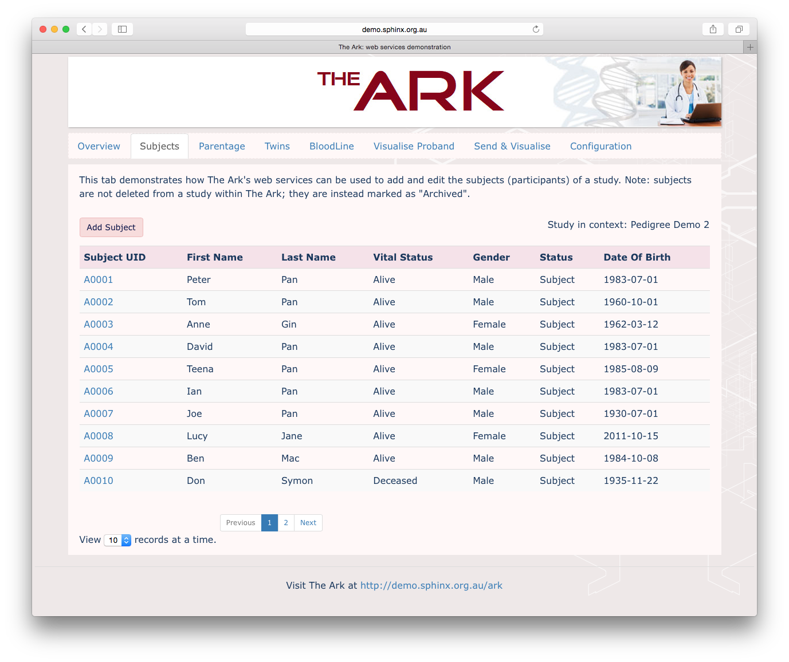

External applications can interact with the The Ark via a secure web services interface. The interface was initially developed with a focus on allowing external applications to utilise The Ark's pedigree modelling and visualisation capabilities. To date, the web services layer facilitates the following functions:
- Create and edit study subjects
- Create and delete pedigree relationships
- Create and delete twin relationships
- Configure pedigree modelling and visualisation functionality
- For a given proband persisted in The Ark, retrieve an inferred pedigree membership, complete with relationship labels
- Generate and retrieve a pedigree visualisation for a proband persisted in The Ark
- Irrespective of existing studies and subjects stored in The Ark, send pedigree data and retrieve a corresponding visualisation without saving this data in The Ark.
Work on The Ark web services interface continues, and greater coverage of the system’s functionality will arrive in future releases.
To demonstrate The Ark's web services layer, we have implemented an example client that uses web service calls to manipulate data hosted in an instance of The Ark, and leverage the system's pedigree modelling and visualisation capabilities.
| Try the web services demonstration |
The client is programmed to interface a public demonstration instance of The Ark hosted at https://demo.sphinx.org.au/ark. Authentication is performed using The Ark user account demo-studyadmin@ark.org.au which has administration privileges on the Demo 2 study.
The results of data entry/modification actions performed using the web services client will be reflected within the Demo 2 study on https://demo.sphinx.org.au/ark. For more information about The Ark at https://demo.sphinx.org.au/ark, including login credentials, please refer to this page.
Source code for the example web services client can be found at this location. Specifications for the web service calls can be found below.

The following web services calls have been implemented in The Ark.
- Get all subjects of a study
- Get single subject from a study
- Update subject within a study
- Add subject to study
- Get all twins from a study
- Delete twin relationship
- Add twin relationship
- Get all subjects who have siblings
- Get all siblings of a subject
- Get all parental relationships
- Delete parental relationship
- Add parental relationship
- Get BloodLine of a subject
- Visualise pedigree of proband
- Get pedigree configuration
- Update pedigree configuration
- Get yes/no subject custom fields
- Get visualisation of a pedigree sent
Authentication is performed with respect to The Ark's user accounts and their role-based access permissions. For a web service call to succeed, the authenticated user must have adequate access permissions to perform the task. See The Ark user documentation for more information.
- You are here:
-
Home

-
The Ark
-
For programmers
- Web Services